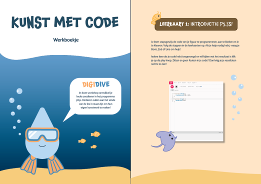
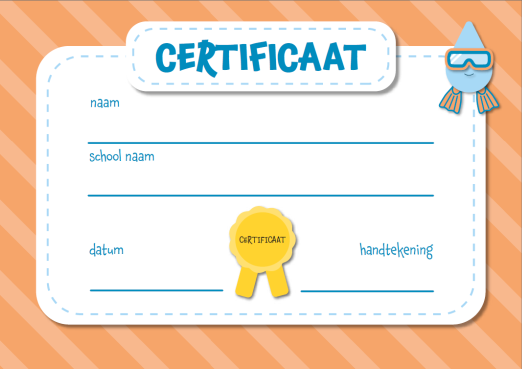

Bij deze opdracht werkte ik in een groep aan het ontwikkelen en uitvoeren van een codeerworkshop voor brugklassers, met als doel hen kennis te laten maken met programmeren. Daarnaast ontwierpen we een werkboek, webpagina en video om docenten te stimuleren de workshop te gebruiken. We onderzochten de doelgroep via bronnen en interviews en gebruikten een scrumboard voor planning en taakverdeling. Tijdens het proces maakten we een storyboard en ontwikkelden we de naam Digidive met bijpassende branding. Op basis van het brandboard ontwierpen we de website, het werkboekje en de video. Ik ontwierp de website in een zee-thema, maakte illustraties en experimenteerde met kleur en compositie in Figma. We voerden de workshop uit op het Bernard Lievegoed College, waar leerlingen enthousiast deelnamen, waarna ik de responsive website afrondde.






Zoë Haagmans
CMD Zuyd Hogeschool Maastricht